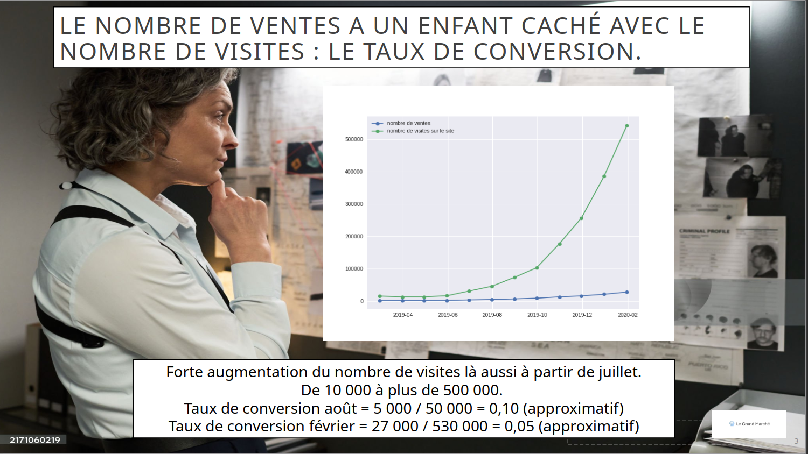

Rapport mensuel e-commerce — Le Grand Marché (storytelling data)

De quoi s'agit-il ?
Mission réalisée en tant que Data Analyst au service Marketing du Grand Marché, entreprise de grande distribution (nourriture, biens de consommation, ex-high tech) vendant en ligne avec livraison à domicile. Le directeur Marketing avait besoin de deux livrables pour la présentation de fin de semaine devant la direction : un rapport mensuel de 5 slides expliquant la baisse du chiffre d'affaires malgré une hausse des ventes, et un tableau de bord Excel sur les clients affiliés préparé pour une collègue du pôle Marketing. Contrainte forte : rester concis (5 slides max, un graphique par slide), accessible à un public non technique, et proposer un axe stratégique.
Sur quoi je me suis appuyé
- Source : graphiques déjà générés automatiquement par script pour le rapport mensuel ; données brutes de transactions des clients affiliés (février) pour le tableau de bord Excel, à intégrer à une trame déjà partiellement complétée par la collègue.
- Contexte business clé : l'entreprise avait arrêté le segment High Tech l'année précédente pour se recentrer sur la nourriture et les biens de consommation — élément essentiel pour interpréter correctement l'évolution du CA.
- Volumétrie tableau de bord : suivi de ~60 clients affiliés sur 6 mois (septembre à février), avec détail par catégorie et par transaction.
Comment j'ai procédé
- Parti pris narratif volontaire pour le rapport mensuel : construction d'un fil "enquête policière" (le CA qui baisse malgré des ventes en hausse comme un "crime" à élucider), avec une slide dédiée par indice — taux de conversion, temps passé sur le site, panier moyen — avant de révéler le "coupable" en dernière slide. Un choix risqué mais assumé pour rendre un rapport de gestion mémorable devant une direction non technique.
- Sélection stricte de 5 graphiques parmi ceux déjà générés, pour respecter la contrainte de concision imposée — exercice de hiérarchisation de l'information autant que d'analyse.
- Calcul de métriques dérivées pour étayer chaque slide : taux de conversion (ventes/visites), variance du temps passé sur le site par session d'achat, corrélation visuelle entre temps passé et panier moyen.
- Sur le tableau de bord Excel : construction de 5 graphiques dont une infographie, mise à jour des formules (transactions, chiffre d'affaires, temps d'achat moyen) en conservant les formules actives pour que la collègue puisse comprendre et réutiliser le fichier, et création d'un tableau croisé dynamique résumant achats et CA par client et par catégorie.
- Application des bonnes pratiques d'accessibilité sur les deux livrables (contrastes, lisibilité).
Ce que ça a produit
- Le nombre de ventes est passé d'environ 1 500 à près de 27 000 entre juillet 2019 et février 2020, mais le CA a chuté au même moment — le paradoxe central du rapport.
- Le taux de conversion (ventes/visites) s'est en réalité dégradé, passant d'environ 0,10 en août à 0,05 en février : le trafic croît plus vite que la capacité à transformer les visites en ventes.
- Le temps passé sur le site pour un achat diminue et devient plus variable dans le temps, avec de plus en plus de clients concluant leur achat en moins de 6 minutes — corrélé à un panier moyen plus faible (les clients qui restent plus longtemps dépensent davantage, concentration des paniers autour de 40 €).
- Le vrai coupable identifié : l'arrêt du segment High Tech a mécaniquement fait baisser le CA total, malgré une forte croissance de la catégorie nourriture (~+25 % entre janvier et février) et une stabilité des biens de consommation (~200 k€/mois).
- Sur le tableau de bord clients affiliés : CA total de ~204 747 € sur la période, porté principalement par la catégorie nourriture (107 401 €) devant les biens de consommation (79 291 €) ; identification des clients affiliés les plus rentables (le client #24 en tête avec 1 510 € de CA sur 24 transactions).
- Axe stratégique recommandé : concentrer les efforts sur le développement de la catégorie nourriture (déjà en forte croissance) et revoir la segmentation de la base clients pour mieux cibler les profils à fort panier moyen.
Ce que je ferais différemment
Ce projet reste volontairement simple dans son analyse — l'essentiel du travail portait sur la sélection et la mise en récit de graphiques déjà générés, plutôt que sur une analyse statistique poussée. Le format imposé (5 slides, un graphique par slide, graphiques déjà produits en amont) laissait aussi peu de marge de manœuvre pour explorer les données au-delà de ce cadre, ce qui a limité la profondeur d'analyse possible malgré l'angle narratif choisi pour compenser côté forme.